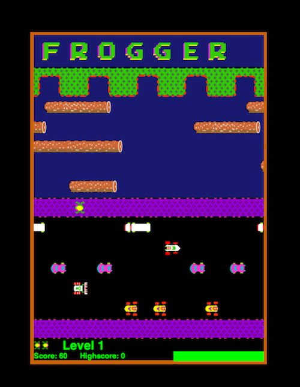

Objectives
- Program with JavaScript.
- Use the Document Object Model.
- Render 2D graphics on the web browser with HTML5's canvas.
Overview
The title of this assignment says it all. In this assignment, you will start to build a working version of Frogger using JavaScript, playable on the web browser.
The goal of the game is to maneuver the frog using the arrow keys UP, DOWN, LEFT, RIGHT from the bottom of the screen to cross the busy road, across the river, and to one of the pads --without getting run over by a vehicle, drown, or eaten by an alligator.

If you have never played Frogger before, you can play it online at http://www.playfrogger.org/.
Instructions
You will write one file: game.js. This file contains all the game logic including initialization, rendering all the graphics, handing keypresses, and animation.
For this assignment, you will write the methods to initialize a game and render graphics to the canvas.
Programming should be done on your local computer.
Getting Started
Starting with this assignment, you will be provided a private GitHub repo for submitting assignments. You will be emailed the name of your private repo. This email will be sent to you at the e-mail address you provided in Lab 1. The only two people who will have access to this special repo will be me (the instructor), the TAs, and you.
- Check your email for the name of your private repository. Make sure you can see it under your list of repositories by logging on to GitHub.
- Make a clone of your private repository (which will be initially empty) onto your computer.
- Download and unzip the file
frogger.zipdirectly into your private repository. - Remove the ZIP file
frogger.zip
You are provided with five files:
index.html- HTML page with a canvasstyle.css- The stylesheetassets/dead_frog.png- Image of the frog getting killed; to be used when frog is run over by a vehicle, eaten, or drowns.assets/frogger_sprites.png- A sprite sheet containing all the images, sprites, necessary for the game.game.js- Where you will write all your JavaScript code.
You are not allowed to create additional stylesheets or HTML files.
About Sprite Sheets
One of the issues that you discovered in Lab 2 is that when assets are loaded for a web page (e.g., images, stylesheets), a lot of time is spent on waiting, the time between sending the HTTP request and receiving an HTTP response. Games typically use lots of images. If there are lots of individual images to be downloaded, then the total amount of time spent waiting will be high. A way to alleviate the waiting problem is to only have one image, but the image contains all the images necessary for the game. This image is better known as a sprite sheet. In this assignment, the image assets/frogger_sprites.png is a sprite sheet.
The JavaScript Canvas API
A canvas is simply a drawing area. HTML5 introduces a new element called <canvas>. Drawing can be done onto the canvas via of the JavaScript Canvas API. The Canvas API contains many powerful methods: from drawing lines to image manipulation. The API also contains a method, drawImage() that allows slicing an image. That is, only draw parts of an image onto the canvas. Please refer to http://www.w3schools.com/tags/canvas_drawimage.asp for the parameters and usage of drawImage(). To get the coordinates (in pixels) of the part of the image you want to render, you can use tools such as Preview on Mac OS X, Gimp, or Photoshop.
Preparing for Part II
Games require animation and animation requires constant drawing (thus, redrawing). Other frequently executed tasks in a game include updating (e.g., updating the location of all the items in the game) and initialization (e.g., putting the character at a particular starting position). Therefore, it is important that your code for this assignment is well thought out and implemented as it will be reused for the next assignment.
Calling a JavaScript Function On Page Load
When a web page has completely loaded all content (including images, JavaScript files, CSS files, etc.), you can execute JavaScript code immediately via the onload attribute for the body element. That is:
<body onload="SomeJavaScriptCode">
Viewing Your Work
Open the index.html file on a web browser on your web browsers (Chrome, Firefox, Safari, the latest version of Microsoft Internet Explorer)
For obvious reasons, you are not allowed to make your work publicly accessibly on the web --yet.
(Course Policy) The README File
Every assignment shall include a README file that describes the work. This description must:
- Identify what aspects of the work have been correctly implemented and what have not.
- Identify anyone with whom you have collaborated or discussed the assignment.
- Say approximately how many hours you have spent completing the assignment.
- Be written in either text format (thus
README.txt) or in Markdown (thusREADME.md). No other formats will be accepted.
(Course Policy) The Late Policy
Homework that is submitted electronically (most homework) will typically be due at 11:59 PM on a Monday or Wednesday or at 5:59 PM on a Friday. We will grant an automatic extension of ten minutes at no cost to you. If you plan on submitting your work at midnight or at six, you will have nine minutes for last-minute changes.
Homework is expected to be submitted on time. However, we recognize that the exigencies of college life occasionally interfere with on-time submission. If you have difficulty getting homework in on time, you have two options:
- For ordinary difficulties, each student is automatically issued six "extension tokens." By expending an extension token, you can get an automatic 24-hour extension on all deadlines associated with a single assignment. To use an extension token, you must e-mail me at
mchow@cs.tufts.edu. Thus must be sent before the assignment is due. At most two extension tokens may be expended on any single assignment. When you are out of tokens, late homework will no longer be accepted: it will be returned ungraded, and you will receive no credit for the work. - If a serious illness affects your ability to complete homework on time, your first step is to report the illness using the "Illness Notification Form" that is available in WebCenter for Students. We will make suitable arrangements. For extraordinary difficulties, such as bereavement, family emergencies, or other extraordinary unpleasant events, your first step should be to make contact with your associate dean for undergraduate education. You must take this step before the assignment is due. Ask your dean to drop me an email or give me a call, and we will make special arrangements that are suited to your circumstances.
Please understand that extension tokens are meant to be used. That is, you will not receive any special bonus at the end of the course if you do not use any of your extension tokens.
Solutions to assignments and labs will not be posted for this course.
Assessment Rubric
For this assignment, you will be assessed on a scale: from "excellent" to "no credit." This is also the similar scale used by the National Science Foundation.
- Excellent - (equivalent to a 95); documentation addresses exactly the key issues, and degree of detail is exactly appropriate; no errors on the JavaScript console; well thought out and implemented code; no errors on the JavaScript console
- Very Good - (equivalent to an 85); high quality in nearly all respects; documentation addresses most key issues, with a good amount of detail; no errors on the JavaScript console; well chosen names for functions and their parameters.
- Good - (equivalent to a 75); demonstrates quality and significant learning; documentation covers some key issues; individual functions are organized and readable; most names chosen well, but their may be some exceptions; JavaScript errors exist in console; errors may be evident from reading the code; graphics may be rendered
- Fair - (equivalent to a 65); the lowest satisfactory grade; very little documentation; unreadable code; errors appear in JavaScript console; some graphics may be rendered
- Poor - (equivalent to a 55); an unsatisfactory grade; work shows little evidence of effort or has other serious deficiencies; no documentation (e.g., no
README); game does not work; no graphics rendered; errors appear in JavaScript console. - No Credit - (equivalent to a 0); for work not turned in, for parts that are incomplete, or for work that is non-functional or appears to bear no relation to the problems assigned. You will receive No Credit for work that you cannot explain!
Submitting the Lab
Push all the files to the private repository that I created for you in a folder named frogger. Say that your private repository is named mchow-comp20, make sure all the files are pushed to mchow-comp20/frogger.